워드프로세서-(구-1급) (2001-11-11 기출문제)
1과목: 워드프로세싱 일반
1. 다음은 메모리 소자에 대한 설명이다. 해당되는 메모리로 가장 옳은 것은?
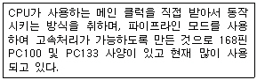
- FDRAM
- EPROM
- SDRAM
- 플래시 메모리(Flash Memory)
(정답률: 57%)

2. 다음은 그래픽 카드나 모니터에 대한 설명이다. 가장 옳지 않은 것은?
- 수직 주파수나 주파수 대역폭은 높은 것이 비교적 좋다.
- 해상도가 높은 것일수록 비교적 좋다.
- 도트 피치는 큰 것일수록 비교적 좋다.
- 색상 수는 많이 지원할수록 비교적 좋다.
(정답률: 72%)
3. 다음 중 네트워크로 연결된 환경에서 문서를 전달하는 방법으로 가장 적절하지 않은 것은?
- 전자우편을 보내면서 문서 파일을 첨부한다.
- ftp를 이용하여 문서를 보낸다.
- 공유 기능을 이용하여 문서를 공유한다.
- 문서를 텍스트 파일로 바꾸어 게시판에 올린다.
(정답률: 60%)
4. 다음 설명 중 옳은 항목으로 짝지어진 것은?
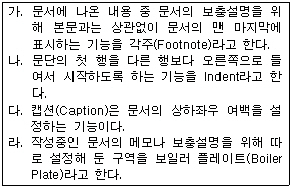
- 가, 다
- 나, 라
- 다, 라
- 가, 나
(정답률: 67%)
5. 문서 작성시 한 행의 끝 부분에 입력된 단어가 너무 길어서 단어의 일부가 다음 줄로 넘어가야 하는 경우 단어 전체가 다음 줄로 넘어가는 것을 무엇이라 하는가?
- 영문균등(Justification)
- 래그드(Ragged)
- 워드랩(Word Wrap)
- 자동개행(Software Return)
(정답률: 67%)
6. 다음 중 워드프로세서의 표시화면에 대한 설명으로 옳지 않은 것은?
- 도구상자는 사용자가 임의로 편집할 수 있다.
- 탭을 설정하면 문단에 탭 기호가 표시된다.
- 스크롤 바를 사용하여 화면을 이동시킬 수 있다.
- 제목표시줄에는 문서의 파일이름이 표시된다.
(정답률: 54%)
7. KS X 10⑤-1 한글 코드 체계를 사용할 경우 ‘한글 WP의 優秀性’을 입력하였을 때 최소 몇 Byte의 기억 공간이 필요한가?
- 15Byte
- 16Byte
- 18Byte
- 20Byte
(정답률: 53%)
8. 다음 중 워드프로세서의 편집 기능에 대한 설명으로 옳지 않은 것은?
- 문서의 특정 위치에서 공백이나 문자, 행, 그림, 표, 페이지 등을 삽입할 수 있다.
- 여러 행으로 구성된 하나의 문단에 대하여 영역을 지정하지 않고 한꺼번에 가운데 정렬을 적용할 수 있다.
- 점끌기 탭을 적용하면 해당 문단의 내용이 소수점을 중심으로 정렬된다.
- 소트(Sort)는 일정한 기준에 따라 순서를 재배열하는 기능이다.
(정답률: 55%)
9. 다음 설명에 해당하는 용어로 옳은 것은?
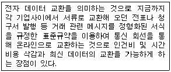
- SI(System Integration)
- SSL(Secure Socket Layer)
- VPN(Virtual Private Network)
- EDI(Electronic Data Interchange)
(정답률: 69%)
10. 다음 설명에 해당되는 것으로 옳은 것은?
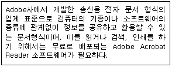
- PDF(Portable Document Format)
- RAD(Rapid Application Development)
- DTPF(Desk Top Publishing Format)
- HMD(Head Mounted Display)
(정답률: 65%)
11. 두 개 이상의 문서를 하나로 합치는 것을 병합이라고 한다. 다음 중 병합과 가장 관계가 깊은 것은?
- 상용구
- 매크로
- 메일머지
- 다단편집
(정답률: 62%)
12. 다음과 같이 문장이 수정되었을 때 사용된 교정부호의 순서로 옳은 것은?
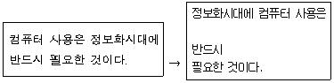
(정답률: 81%)
13. 작성한 문서를 다른 응용프로그램에서도 쉽게 부를 수 있는 호환성이 높은 형태로 보관하려면 어떤 형식으로 저장하면 좋은가?
- 비트맵 형식(*.BMP)
- HTML 형식(*.HTML)
- RTF 형식(*.RTF)
- 워드패드 형식(*.DOC)
(정답률: 59%)
14. 다음 중 컴퓨터 등 정보처리 능력을 가진 장치에 의하여 전자적인 형태로 작성, 송·수신 또는 저장된 문서를 무엇이라고 하는가?
- 대외문서
- 대내문서
- 전자문서
- 사문서
(정답률: 83%)
15. 다음의 교정부호 중에서 단어나 글자의 위치 변경과 관련이 없는 것은?
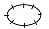
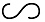
(정답률: 84%)
16. 다음 중 공문서의 3원칙에 속하지 않는 것은?
- 즉일처리의 원칙
- 기계화의 원칙
- 책임처리의 원칙
- 법령적합의 원칙
(정답률: 75%)
17. 중요문서의 앞장의 뒷면과 뒷장의 앞면에 걸쳐 찍는 도장 또는 그 행위를 무엇이라 하는가?
- 심사
- 결재
- 시행
- 간인
(정답률: 77%)
18. 다음 중 On-Line 전자출판이 기존 종이 출판에 비해 갖는 특징과 거리가 먼 것은?
- 출판 내용에 대해 추가 및 수정과 배포가 신속하다.
- 사용자가 필요로 하는 부분만을 검색하고 인쇄할 수 있다.
- 종이 출판에 비해 비용이 많이 든다.
- 출판물을 보관하기 위한 공간이 줄어든다.
(정답률: 79%)
19. 전자출판에서 오버프린트(Over Print)에 대한 설명으로 가장 적절한 것은?
- 특정한 개체 주위로 텍스트가 침범하지 않게 하는 기능
- 문자 위에 겹쳐서 문자를 중복 인쇄하는 작업
- 글자의 자간을 좁혀서 인쇄하는 작업
- 새 문서에서 개체를 편집하는 행위
(정답률: 81%)
20. 전자출판에서 아웃라인(Outline) 방식의 글꼴이 아닌 것은?
- 트루타입(True Type) 글꼴
- 비트맵(Bitmap) 글꼴
- 벡터(Vector) 글꼴
- 포스트 스크립트(Post Script) 글꼴
(정답률: 71%)
2과목: PC 운영 체제
21. 한글 Windows 98에서 폴더에 관한 다음 설명 중 옳은 것은?
- 폴더에 대해 속성을 별도로 설정할 수 없다.
- 하위폴더가 여러개 포함된 폴더를 삭제할 수 있다.
- 바로가기 메뉴로 폴더를 만들려면 마우스의 오른쪽 버튼을 눌러 [파일]-[새로 만들기]-[폴더]를 차례로 클릭해야 한다.
- 바탕화면에 바로가기 폴더를 만들려면 해당 폴더에 대고 마우스의 왼쪽 버튼을 누르면서 바탕화면으로 드래그하면 된다.
(정답률: 46%)
22. 다음은 한글 Windows 98에서 공유 기능에 관한 설명이다. 가장 거리가 먼 것은?
- 공유할 자원에 대해 공유 이름을 부여할 수 있다.
- 암호에 따라 읽기 전용 또는 읽기/쓰기에 대한 사용 권한 설정을 달리 부여할 수 있다.
- 공유해 놓은 폴더는 바이러스 감염의 위험이 없다.
- 프린터도 공유가 가능하다.
(정답률: 75%)
23. 한글 Windows 98에서 클립보드에 있는 내용을 파일로 저장하려 한다. 만약 파일명을 exam이라 하였다면 정식파일명은 무엇인가?
- exam.clp
- exam.cls
- exam.clb
- exam.cpd
(정답률: 56%)
24. 다음은 한글 Windows 98 사용에 대한 설명이다. 잘못된 것은?
- [Ctrl]키를 누른 채 다른 창으로 파일 끌기를 하면 파일을 복사할 수 있다.
- [Print Screen]키를 누르면 바탕화면 전체가 클립보드로 복사된다.
- 여러 창을 화면에 만들었을 때 [Alt]키를 누른채 [Tab]키를 누르면 다른 창으로 전환된다.
- [F5]키를 누르면 선택한 파일, 폴더 등의 이름을 바꿀 수 있다.
(정답률: 76%)
25. 한글 Windows 98의 워드패드나 기타 다른 보조프로그램들은 자체적으로 특수문자를 지원하지 않는다. 특수문자나 여러 가지 기호를 선택하여 사용할 수 있게 해주는 프로그램의 이름은?
- 문서 작성기
- 문자표
- 문자 편집기
- 문자 작성기
(정답률: 70%)
26. 다음 설명과 같은 기능을 하는 보조프로그램은 무엇인가?
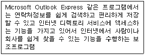
- 주소록
- 전화걸기
- Netmeeting
- 인터넷 연결마법사
(정답률: 79%)
27. 한글 Windows 98에서 프린터를 사용하여 문서를 인쇄할 때의 설명으로 옳지 않은 것은?
- 인쇄 대기중인 문서의 목록을 확인할 수 있으며, 인쇄를 취소할 수도 있다.
- 문서를 인쇄하는 동안 작업 표시줄에 프린터 아이콘이 표시되며, 인쇄가 끝나면 이 아이콘이 없어진다.
- 프린터 아이콘은 바탕화면에 단축 아이콘(바로가기)으로 만들 수 없다.
- 네트워크 프린터를 설치하고 나면 다른 컴퓨터에 연결된 프린터를 내 컴퓨터에 연결된 프린터처럼 사용할 수 있다.
(정답률: 68%)
28. 다음 중 한글 Windows 98의 시동 디스크에 대한 설명 중 옳지 않은 것은?
- Windows를 설치한 후 [제어판]의 [프로그램 추가/제거]를 실행하여 시동 디스크를 만들 수 있다.
- 시동 디스크를 사용하여 부팅해도 네트워크 기능을 사용할 수 있다.
- 시동 디스크를 만들려면 플로피 디스크가 필요하다.
- 디스크 포맷으로 만든 시스템 디스크는 부팅은 가능하지만 전반적인 문제해결을 할 수 없다.
(정답률: 45%)
29. 한글 Windows 98에서 특정 응용프로그램을 제거하려고 할 때 다음 중 가장 최선의 방법은?
- 해당 프로그램이 있는 폴더를 모두 삭제한다.
- 해당 프로그램이 있는 드라이브를 포맷한다.
- 해당 프로그램의 백업파일을 삭제한다.
- Uninstall을 하거나 [제어판]에서 [프로그램 추가/제거]를 이용한다.
(정답률: 75%)
30. 한글 Windows 98의 탐색기에서 [보기]-[폴더옵션]-[파일형식]을 선택했을 때 할 수 있는 일은?
- 연결 프로그램 확인
- 파일 내용 변경
- 이전 파일 찾기
- 파일 포맷팅
(정답률: 58%)
31. 한글 Windows 98의 도움말 사용법에 관한 설명 중 옳지 않은 것은?
- 윈도우즈에 대한 도움말은 바탕화면에서 오른쪽 마우스를 클릭하면 시작할 수 있다.
- 도움말을 통해 현재 설치되어 있는 하드웨어와 윈도우즈의 충돌에 관한 도움말을 얻을 수 있다.
- 도움말을 통해 프로그램의 설치 및 제거에 대한 정보를 얻을 수 있다.
- 도움말 프로그램에서 색인을 통한 도움말 항목에의 접근이 가능하다.
(정답률: 55%)
32. 한글 Windows 98에서 시작 버튼의 [실행] 메뉴를 선택한 후,입력한 값과 실행되는 현상의 연결이 옳지 않은 것은?
- “ . ” - 바탕화면을 창으로 연다.
- “ .. ” - Windows가 설치된 폴더를 연다.
- “ / ” - root 폴더가 열린다.
- “explorer.exe” - Internet explorer가 실행된다.
(정답률: 47%)
33. 한글 Windows 98을 사용하면서 쓰여지는 바로가기 키와 그 동작이 잘못 짝지어진 것은?
- [Ctrl]키 + [Esc]키 : 시작메뉴 실행
- [Windows]키 + [M] : 모든 윈도우를 최소화한다.
- [Windows]키 + [Pause(Break)]키 : 시스템 등록정보를 본다.
- [Windows]키 + [Tab]키 : 실행 대화상자를 연다.
(정답률: 55%)
34. 한글 Windows 98에서 디스크에 쓰기 작업을 하는 도중에 디스크 공간이 부족하다는 메시지가 출력되었다. 다음 중 취해야 할 조치로서 옳지 않은 것은?
- 휴지통을 비워 디스크 공간을 확보한다.
- [디스크 검사]를 실행하여 디스크 공간을 확보한다.
- 불필요한 파일을 백업 받은 후에 하드디스크에서 삭제한다.
- 사용하지 않는 Windows 구성요소를 삭제한다.
(정답률: 54%)
35. 다음 중 ARP(Address Resolution Protocol)에 대한 설명으로 가장 옳은 것은?
- 통신 환경의 문제들에 대하여 피드백(feedback)을 제공한다.
- IP 주소를 이더넷(Ethernet) 주소와 같은 하드웨어 주소로 변환한다.
- TCP/IP 네트워크 관리를 위한 프로토콜이다.
- 문자로 된 IP 주소를 숫자로 된 IP 주소로 변환하는데 사용이 되는 프로토콜이다.
(정답률: 43%)
36. 한글 Windows 98 [백업] 프로그램이 제공하는 기능에 대한 설명으로 옳지 않은 것은?
- 백업(Backup) : 선택한 파일이나 폴더를 백업한다.
- 압축(Compress) : 선택한 파일이나 폴더를 압축한다.
- 비교(Compare) : 백업한 파일과 원본 파일을 비교하여 이상 유무를 확인한다.
- 복구(Restore) : 원본 데이터의 손상시 백업 파일로부터 원본 파일을 복구한다.
(정답률: 41%)
37. 다음 중 컴퓨터로 인터넷을 사용할 수 없을 때 점검해야 할 사항과 가장 거리가 먼 것은?
- 네트워크 설정이 올바르게 되어 있는지 확인한다.
- 한글 윈도우 또는 웹 브라우저가 정상적으로 설치되어 있는지 확인한다.
- TCP/IP 프로토콜에 버그(bug)가 있는지 조사한다.
- 네트워크 카드가 정상적으로 동작하고 있는지 점검한다.
(정답률: 59%)
38. 한글 Windows 98에서 디스크 표면의 오류를 검사할 때 검사할 디스크 영역에 관한 선택 사항이 아닌 것은?
- 시스템 및 데이터 영역 검사
- FAT 영역 검사
- 시스템 영역만 검사
- 데이터 영역만 검사
(정답률: 60%)
39. 한글 Windows 98에서 파일이나 폴더를 찾으려면 [찾기]를 이용한다. [찾기]를 위해 지정하는 조건이 아닌 것은?
- 이름 및 위치
- 폴더와 크기를 지정할 수 있다.
- 날짜의 경우 바뀐 날짜, 만든 날짜 등 찾을 조건을 지정할 수도 있다.
- 파일 형식을 지정할 수도 있다.
(정답률: 44%)
40. 한글 Windows 98의 [휴지통] 기능에 관한 설명 중 옳지 않은 것은?
- 휴지통의 크기는 하드디스크 드라이브 용량의 10%로 기본 설정되어 있다.
- 휴지통의 최대크기 용량을 초과하면 이전에 최초로 삭제한 파일부터 자동으로 지워진다.
- 삭제한 파일이 있을 때와 없을 때의 휴지통 아이콘 모양이 달라진다.
- 휴지통에 들어있는 파일을 복구하면 복구형식 등 자료추가로 파일 크기가 약간 늘어난다.
(정답률: 56%)
3과목: 컴퓨터 및 정보활용
41. 다음 프로그램 내장 방식에 대한 설명 중 옳지 않은 것은?
- 프로그램을 공동으로 사용 가능하다.
- 메모리에 데이터와 명령어가 저장되어 수행된다.
- 프로그램 수정이 외부 프로그램 방식보다 용이하다.
- 가전제품에 들어 있는 전용컴퓨터는 사용자가 프로그램을 입력할 수 없기 때문에 프로그램 내장방식이 아니다.
(정답률: 68%)
42. 다음 중 CISC와 RISC의 차이를 대비한 것으로 옳지 않은 것은?
- 복잡하고 기능이 많은 명령어 … 간단한 명령어
- 다양한 사이즈의 명령어 … 동일한 사이즈의 명령어
- 복잡한 주소지정 방식 … 간단한 주소지정 방식
- 많은 수의 레지스터 … 적은 수의 레지스터
(정답률: 66%)
43. 다음 중 CCD(Charge Couple Device)를 사용하는 입력 장치는?
- Scanner
- Touch Screen
- Optical Mouse
- MICR
(정답률: 49%)
44. 다음은 무엇에 대한 설명인가?
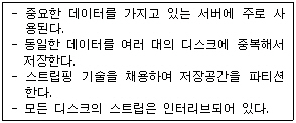
- DVD
- RAID
- Juke Box
- Jaz Drive
(정답률: 75%)
45. 정렬된 두 개 이상의 파일을 하나의 새로운 파일로 편성하는 적업을 무엇이라고 하는가?
- 파일 합병(File Merge)
- 파일 정렬(File Sort)
- 파일 생성(File Creation)
- 파일 복사(File Copy)
(정답률: 77%)
46. 다음 중 CMOS setup에서 할 수 없는 일은?
- 하드디스크 타입(Type)을 설정한다.
- 부팅 디바이스의 순서를 정한다.
- 전원 관리 모드를 설정한다.
- 사용할 운영체제의 암호를 설정한다.
(정답률: 48%)
47. 다음중 바이러스를 예방하기 위한 방법으로 옳지 않은 것은?
- 다른 컴퓨터로부터 다운로드 받은 파일은 백신 프로그램으로 검사한 다음 사용한다.
- 바이러스 감염이 의심되는 전자메일은 일단 읽어보고 감염여부를 판단한다.
- 중요 실행 파일의 속성을 읽기 전용으로 설정한다.
- 최신 버전의 백신 프로그램을 사용하여 주기적으로 시스템을 검사한다.
(정답률: 74%)
48. 다음은 무엇에 대한 설명인가?
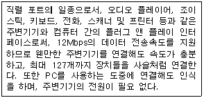
- PCI
- USB
- SCSI
- EISA
(정답률: 80%)
49. 다음 중 웹 페이지의 설계시 준수하여야 할 원칙으로 옳지 않은 것은?
- 웹 페이지의 로드 시간이 오래 걸리지 않도록 너무 많은 이미지의 사용을 피한다.
- 화면이 두 번 이상 길게 스크롤(Scroll)되는 문서는 피하는 것이 좋다.
- 사용자가 웹 페이지간의 이동이 용이하도록 한다.
- 특정 모니터 화면의 크기와 해상도를 가정하고 여기에 적합한 웹 페이지를 만든다.
(정답률: 45%)
50. 멀티미디어 기술은 최근 정보 산업의 다양한 분야에서 활용되고 있다. 다음 중 멀티미디어 기술의 발전을 뒷받침 할 수 있는 배경과 거리가 가장 먼 것은?
- 데이터 압축기술의 발전
- 아날로그(Analog) 데이터 기술의 발전
- 인터넷 기술의 발전
- 하드웨어 기술의 발전
(정답률: 68%)
51. TCP/IP 프로토콜은 OSI 7 계층 중에서 어느 계층에 속하는가?
- 트랜스포트 계층 / 네트워크 계층
- 네트워크 계층 / 물리 계층
- 물리 계층 / 트랜스포트 계층
- 세션 계층 / 프리젠테이션 계층
(정답률: 55%)
52. 메일 서버에 도착한 E-mail을 네트워크를 통하여 사용자 PC내에서 받아볼 수 있도록 메일 서버에서 제공되는 프로토콜을 무엇이라 하는가?
- SMTP
- POP
- TCP
- HTTP
(정답률: 54%)
53. 다음은 어떤 법의 취지를 설명한 것인가?
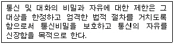
- 개인정보법
- 컴퓨터프로그램보호법
- 사생활침해방지법
- 통신비밀보호법
(정답률: 67%)
54. 다음 중 컬러모니터(CRT)에서 사용되는 세 가지의 기본색상은?
- Red, Blue, Yellow
- Green, Red, Yellow
- Blue, Yellow, Green
- Red, Green, Blue
(정답률: 53%)
55. 다음 중 응용 소프트웨어에 속하지 않는 소프트웨어는?
- 인터프리터
- 워드프로세서
- 스프레드시트
- 백신프로그램
(정답률: 58%)
56. 벡터 이미지와 비트맵 이미지의 차이점에 대한 설명 중 옳지 않은 것은?
- 비트맵 이미지는 이미지의 각 픽셀의 상태를 코드로 나타내어 저장된다.
- 벡터 이미지에서 더 실체감을 느낄 수 있다.
- 비트맵 이미지보다 벡터 이미지의 각 부분을 확대 또는 축소시켜도 이미지 손상이 적다.
- 벡터 이미지는 화상정보를 수학적 기술을 사용하여 선분의 집합으로 만들어진다.
(정답률: 41%)
57. 새로운 하드 디스크를 구입하여 설치하려고 한다. 다음 중 옳지 않은 것은?
- EIDE 방식의 인터페이스는 하드디스크를 4개까지 장착할 수 있다.
- SCSI 방식의 하드디스크는 체인식으로 연결된다.
- 하드디스크는 파티션 작업을 하고 난 후 포맷한다.
- SCSI 인터페이스는 하드디스크만 연결해야 한다.
(정답률: 50%)
58. 다음 중 하드디스크의 고장으로 새로운 하드디스크로 교체하려고 할 때 새 하드디스크를 시스템에 설치하는 순서가 옳은 것은?
- CMOS 설정 → 디스켓 부팅 → 파티션 설정 → Windows 설치 → 디스크 포맷
- CMOS 설정 → 디스켓 부팅 → 파티션 설정 → 디스크 포맷 → Windows 설치
- CMOS 설정 → 디스켓 부팅 → 디스크 포맷 → 파티션 설정 → Windows 설치
- 디스켓 부팅 → CMOS 설정 → 디스크 포맷 → Windows 설치 → 파티션 설정
(정답률: 56%)
59. 컴퓨터를 이용한 데이터 처리의 일반적인 순서로 타당한 것은?
- 시스템 분석 → 시스템 설계 → 프로그래밍 → 데이터 작성 → 실행
- 시스템 분석 → 프로그래밍 → 시스템 설계 → 데이터 작성 → 실행
- 시스템 분석 → 시스템 설계 → 실행 → 데이터 작성 → 프로그래밍
- 데이터 작성→ 시스템 설계 → 프로그래밍 → 시스템 분석 → 실행
(정답률: 56%)
60. 외부의 불법 침입으로부터 내부의 정보 자산을 보호하고, 외부로부터의 유해 정보 유입을 차단하기 위한 정책과 이를 지원하는 HW, SW의 총칭은?
- SSL
- SET
- 방화벽(Firewall)
- 암호화(Encription)
(정답률: 74%)